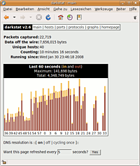

Netzwerk-Monitoring
Zum Verständnis dieses Artikels sind folgende Seiten hilfreich:
 Hier werden einige Werkzeuge vorgestellt, mit denen man bequem Netzwerkaktivitäten überprüfen und protokollieren kann. So kann man sehen, was aktuell an Daten übertragen wird oder über den Monat aufgerechnet überblicken, wieviel Daten man über das Netzwerk geschickt hat.
Hier werden einige Werkzeuge vorgestellt, mit denen man bequem Netzwerkaktivitäten überprüfen und protokollieren kann. So kann man sehen, was aktuell an Daten übertragen wird oder über den Monat aufgerechnet überblicken, wieviel Daten man über das Netzwerk geschickt hat.
Am Ende des Artikels finden sich weitere Programme, mit denen einzelne Server oder ganze Server-Farmen überwacht werden können.
Programme mit grafischer Oberfläche¶
Etherape¶
Etherape  ist ein grafisches Werkzeug, das einen Blick auf die derzeitige Netzwerkaktivität bietet. Aktuelle Verbindungen werden je nach übertragenem Volumen dicker als passive Verbindungen dargestellt usw.
ist ein grafisches Werkzeug, das einen Blick auf die derzeitige Netzwerkaktivität bietet. Aktuelle Verbindungen werden je nach übertragenem Volumen dicker als passive Verbindungen dargestellt usw.
Das Programm kann direkt aus den offiziellen Paketquellen installiert [1] werden:
etherape (universe)
 mit apturl
mit apturl
Paketliste zum Kopieren:
sudo apt-get install etherape
sudo aptitude install etherape
Nach der Installation findet sich das Programm unter "Internet -> EtherApe (as root)". Alternativ kann man das Programm auch gleich im Terminal starten und dabei die Netzwerkschnittstelle angeben. Auch hier werden Root-Rechte benötigt.
Wireshark / Ethereal¶
Wireshark (früher Ethereal) ist ein Programm zur Analyse von Kommunikationsverbindungen eines Rechnernetzes (meist TCP/IP). Das Werkzeug stellt nach der Aufzeichnung des Datenverkehrs einer Netzwerk-Schnittstelle (zum Beispiel Ethernet-Netzwerkkarte) die Daten in Form einzelner Pakete dar. Dabei werden die Daten übersichtlich und für den Menschen nachvollziehbar analysiert. So kann der Inhalt der mitgehörten Pakete betrachtet oder nach Inhalten gefiltert werden.
Das Programm lässt sich mit der Paketverwaltung über das Paket
wireshark (universe)
mit apturl
Paketliste zum Kopieren:
sudo apt-get install wireshark
sudo aptitude install wireshark
installieren [1]. Anschließend findet man es bei Ubuntu-Varianten mit einem Anwendungsmenü unter "Internet -> Wireshark". Wireshark sollte nicht mit Root-Rechten gestartet werden.
Kommandozeilenwerkzeuge¶
tshark¶
tshark ist die Kommandozeilenversion des Paket-Sniffers Wireshark / Ethereal. Das Programm muss über das Paket
tshark (universe)
mit apturl
Paketliste zum Kopieren:
sudo apt-get install tshark
sudo aptitude install tshark
installiert [1] werden. Mehr zun Programm steht im entsprechenden Abschnitt des Artikels Wireshark.
tcpdump¶
tcpdump ist ein bekannter und weit verbreiteter Paket-Sniffer für die Kommandozeile. Es ist für so gut wie jedes Unix-artige Betriebssystem erhältlich und kann im Gegensatz zu seinem Namen nicht nur TCP-Pakete, sondern auch UDP- und ICMP-Pakete mitschneiden.
Auch wenn tcpdump ein Kommandozeilen-Programm ist, ist es möglich, die mitgeschnittenen Pakete alternativ in der grafischen Oberfläche von Wireshark / Ethereal zu analysieren.
Näheres zu alledem findet sich im Artikel tcpdump.
EthStatus¶
EthStatus ist ein Werkzeug, um dem aktuellen Netzwerkverkehr in einer ncurses-basierenden Oberfläche graphisch anzuzeigen. Es ähnelt IPTraf, ist jedoch als permanenter Task für eine Konsole im Hintergrund gedacht. Es muss über das Paket
ethstatus (universe)
mit apturl
Paketliste zum Kopieren:
sudo apt-get install ethstatus
sudo aptitude install ethstatus
installiert [1] werden.
# Allgemein ethstatus -i <Interface> -S <Maximale Geschwindigkeit> # Beispiel ethstatus -i ppp0 -S 16m
iftop¶
iftop ist ein Kommandozeilenwerkzeug zum Überwachen des Netzwerkverkehrs (Traffic) in Echtzeit, ähnlich dem Programm top zum Überwachen von Prozessen. Weitere Informationen im Artikel iftop.
IPTraf¶
IPTraf bzw. der Fork IPTraf-NG ist ein umfangreiches Werkzeug, um den Netzwerkverkehr zu analysieren. Es sammelt eine ganze Reihe an Informationen, die über eine ncurses-Oberfläche übersichtlich dargestellt werden. Das Programm muss über das Paket
iptraf
mit apturl
Paketliste zum Kopieren:
sudo apt-get install iptraf
sudo aptitude install iptraf
oder
iptraf-ng
mit apturl
Paketliste zum Kopieren:
sudo apt-get install iptraf-ng
sudo aptitude install iptraf-ng
installiert [1] und dann mit Root-Rechten gestartet werden, da der Paketfilter ausgelesen werden muss.
# Allgemein sudo iptraf <Interface> # Beispiel sudo iptraf ppp0
NetHogs¶
NetHogs ist eine Art top für Netzwerkschnittstellen. Damit lässt sich beobachten, welche lokalen Anwendungen wieviel Netzwerkverkehr verursachen. Weitere Details sind dem genannten Artikel zu entnehmen.
netstat¶
netstat zeigt den Status von Netzwerkschnittstellen an. In Kombinationen mit bestimmten Optionen kann man so schnell sehen, welche Programme welche Verbindungen aufgebaut haben und welchen Zustand diese Verbindungen besitzen (open, closed usw.).
Nload¶
Nload ist eine Kommandozeilen-Anwendung, die Traffic und Bandbreite in Echtzeit grafisch darstellen kann. Das Programm ist in den offiziellen Paketquellen enthalten. Installiert [1] wird das Programm mit folgendem Paket:
nload (universe)
mit apturl
Paketliste zum Kopieren:
sudo apt-get install nload
sudo aptitude install nload
Die Darstellung ist in ankommenden und ausgehenden Traffic unterteilt. Die Oberfläche von Nload ist allerdings auf Englisch, was aber für die meisten Benutzer kein Problem darstellen sollte. Nload aktualisiert in den Standardeinstellungen seine Anzeige zweimal pro Sekunde. Das Aktualisierungsintervall kann man allerdings auch selber vorgeben.
nload -t 1000
Die Option -t gefolgt vom einem Wert in Millisekunden gibt dabei das Intervall vor.
Die Grenzen für den ankommenden bzw. den ausgehenden Traffic kann man mit -i bzw. mit -o festlegen.
-i: Zahl in Kbit/s-o: Zahl in Kbit/s
Beispiel:
nload -t 1000 -i 500 -o 100
Die wichtigsten Parameter lassen sich auch während der Laufzeit ändern, auch die zu beobachtende Schnittstelle. Drückt man auf O öffnet sich das entsprechende Menü. Mit den Tasten + und - kann man sich dann durch das Menü durcharbeiten. Zum Beenden des Programms wird einfach Q gedrückt.
vnStat¶
vnStat ist ein einfaches Programm, das den Datenverkehr protokolliert. Weitere Informationen sind im Wikiartikel zu finden: vnStat.
Das vnStat PHP frontend bereitet die gesammelten Daten auf und liefert als Ergebnis übersichtliche Berichte.
Sonstige¶
Weitere Kommandozeilenprogramme:
Glances - Systemmonitor, der auch die Empfangs- und Sendegeschwindigkeit der Netzwerkschnittstellen anzeigt
iperf - Netzwerkgeschwindigkeit messen
MTR - ping kombiniert mit traceroute
nttcp - Netzwerkgeschwindigkeit messen
ping - Netzwerkverbindung prüfen
speedtest-cli - Internetgeschwindigkeit messen
Browser¶
ntopng¶
ntop hilft den Datenverkehr im eigenen Netzwerk nicht nur zu überwachen, sondern auch detailliert auswerten. Mit den gewonnenen Einblicken kann man das eigene Netzwerk ausführlich überwachen und auswerten. So lässt sich erkennen, welcher Arbeitsplatz wie viel Netzverkehr erzeugt, über welche Ports der Netzwerkverkehr vorwiegend läuft und somit z.B. Filesharing-Programme im eigenen LAN aufspüren. Das Programm selber läuft als Dienst im Hintergrund und kann über ein Webfrontend bedient werden. Ein großer Nachteil ist, dass nach einem Neustart des Dienstes (bspw. beim Neustart des Rechners) alle Statistiken verloren gehen, wodurch der Einsatz am heimischen Rechner in der Regel nicht zu empfehlen ist.
ntopng (universe)
mit apturl
Paketliste zum Kopieren:
sudo apt-get install ntopng
sudo aptitude install ntopng
Nach der Installation [1] muss ein eigenes Passwort für die administrativen Funktionen im Webfrontend festgelegt werden.
sudo ntopng -A
Anschließend sollte man noch die Konfiguration von ntop an die eigenen Bedürfnisse anpassen. Dazu muss das ntop-Paket mit dpkg-reconfigure neu konfiguriert werden.
sudo dpkg-reconfigure ntopng
Möchte man mehr als nur eine Netzwerkschnittstelle überwachen, so kann man die einzelnen Interfaces durch Kommas getrennt angeben. Konfiguriert man z.B. einen Router, der über "ppp0" mit dem Internet verbunden ist und über "eth0" mit dem eigenen Netzwerk, dann kann man hier "ppp0,eth0" eintragen.
Anschließend muss ntop über
sudo service ntopng restart
neu gestartet werden. Mehr zum Starten bzw. Stoppen von Diensten findet man im Artikel Dienste. Nach dem Neustart kann nun ntopng im Browser auf Port 3000 aufgefrufen werden (http://localhost:3000 oder http://SERVER-IP_ODER_NAME:3000). Dort kann man über eine übersichtliche Webseite ausführliche Informationen zur Netzwerkaktivität sehen.

darkstat¶
darkstat ist ein Programm ähnlich wie ntopng. Es wurde jedoch mit dem Ziel entwickelt weniger Speicher zu benötigen und stabiler zu sein als ntopng. Wie ntopng kann darkstat über ein Webfrontend bedient werden. Die dort angezeigten statistischen Daten beziehen sich auf die an der Kommunikation beteiligten Hosts, dem verursachten Traffic und den benutzten Portnummern bzw. den Übertragungsprotokollen. Weiterhin können Diagramme in Bezug auf die erfassten Zeitperioden und eine kurze Zusammenfassung der analysierten Datenpakete seit Programmstart betrachtet werden.
darkstat (universe)
mit apturl
Paketliste zum Kopieren:
sudo apt-get install darkstat
sudo aptitude install darkstat
Nach der Installation muss die Datei /etc/darkstat/init.cfg mit einem Editor mit Root-Rechten [3] angepasst werden. Die Zeile
START_DARKSTAT=no
muss in
START_DARKSTAT=yes
geändert werden. Außerdem sollte überprüft werden ob die vorgegebene Netzwerkschnittstelle eth0 in der Zeile
INTERFACE="-i eth0"
auch wirklich die zu überwachende ist. Zusätzlich können folgende Optionen aktiviert werden, wenn die entsprechende Zeile durch Entfernen von # aktiviert wird.
| Optionen zu darkstat | |
| Option | Beschreibung |
#PORT="-p 666" | Port über den das Webinterface aufzurufen ist |
#BINDIP="-b 127.0.0.1" | Das Interface an eine Netzwerkschnittstelle binden |
#LOCAL="-l 192.168.0.0/24" | Bereich des eigenen Netzwerkes (nur für Kernel 2.4.x nötig) |
#FIP="-f 127.0.0.1" | Setzt die lokale IP, wird bei Servern benötigt, wo /home ausgelagert wird |
#DNS="-n" | Deaktiviert die Namensauflösung |
#SPY="--spy eth0" | Durchsucht das Netzwerkinterface nach HTTP Anfragen und speichert diese unter darkstat.spylog.YYMMDD |
Ist darkstat vollständig eingerichtet, so kann das Programm als Dienst mittels [2]
sudo service darkstat start
gestartet werden. Mehr zum Starten bzw. Stoppen von Diensten findet man im Wiki im Artikel Dienste. Danach öffnet man darkstat in einem Browser über die URLs http://localhost:666/ bzw. http://SERVER-IP_ODER_NAME:666/. Dort kann man dann über eine Webseite Informationen zur Netzwerkaktivität sehen.

 - Inventarisierung und HelpDesk
- Inventarisierung und HelpDesk- Erstellt mit Inyoka
-
 2004 – 2017 ubuntuusers.de • Einige Rechte vorbehalten
2004 – 2017 ubuntuusers.de • Einige Rechte vorbehalten
Lizenz • Kontakt • Datenschutz • Impressum • Serverstatus -
Serverhousing gespendet von